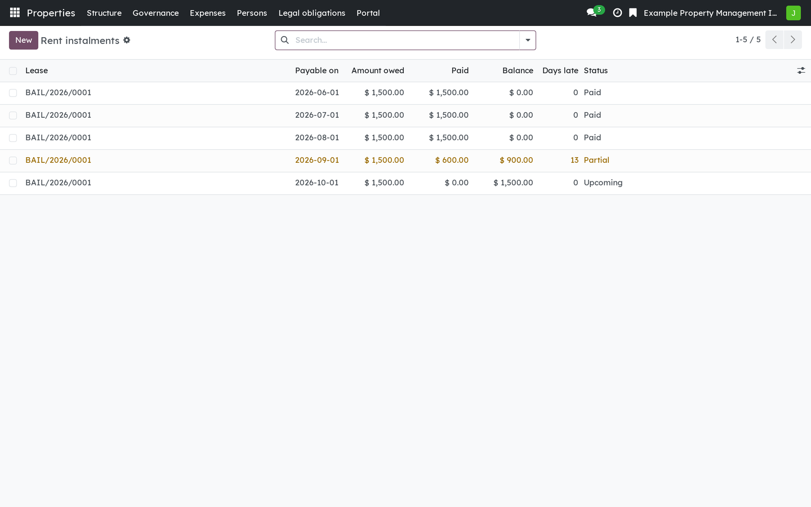
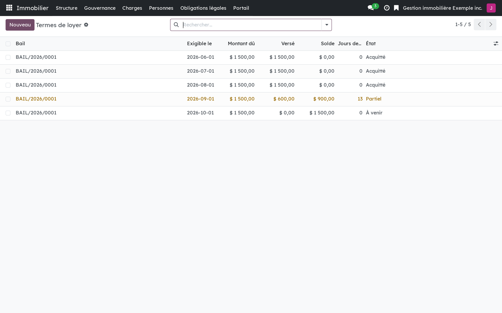

Version française plus bas.
The rent terms of a lease, the payments applied to them, and what is still owed. Nothing more, and deliberately so: the commonest reading of Québec's rental rules on late rent is wrong in ways that would push a lessor toward an unlawful step. The module keeps the account instalment by instalment and leaves every conclusion to the Administrative Housing Tribunal.

Rent instalments, what was paid on each, and what remains owed.
Requires Rental: the dwelling lease (bf_rental). Rental: lessee portal (bf_rental_portal) shows each lessee what they have paid.
This is software, not legal advice.
Business Source License 1.1. You may use this module in production for your own internal business operations, which include administering immovables that you own or that you are constituted to administer, and letting a person acting on your behalf use your instance for that purpose. Administering immovables for the account of others, or providing the module to third parties as a product or service, whether hosted, managed or resold, requires a separate written agreement with the licensor. Each version converts to LGPL-3.0-or-later on the Change Date stated in the LICENSE file, which sets out the exact terms.
Les termes de loyer d'un bail, les versements qui s'y imputent, et ce qui reste dû. Rien de plus, et c'est délibéré : la lecture la plus répandue des règles du louage sur le loyer en retard est fausse, et elle pousserait le locateur vers un geste illégal. Le module tient le compte terme par terme et laisse toute conclusion au Tribunal administratif du logement.

Les termes de loyer, ce qui a été versé sur chacun, et ce qui reste dû.
Exige Locatif : le bail de logement (bf_rental). Locatif : portail du locataire (bf_rental_portal) montre à chaque locataire ce qu'il a payé.
Ce logiciel ne donne pas d'avis juridique.
Business Source License 1.1. Vous pouvez utiliser ce module en production pour vos propres activités internes, ce qui comprend l'administration des immeubles dont vous êtes propriétaire ou que vous êtes constitué pour administrer, et l'usage de votre instance à cette fin par une personne qui agit pour votre compte. Administrer des immeubles pour le compte d'autrui, ou fournir le module à des tiers comme produit ou service, hébergé, géré ou revendu, exige une entente écrite distincte avec le concédant. Chaque version passe sous LGPL-3.0 ou ultérieure à la date de changement inscrite au fichier LICENSE, qui fait foi.